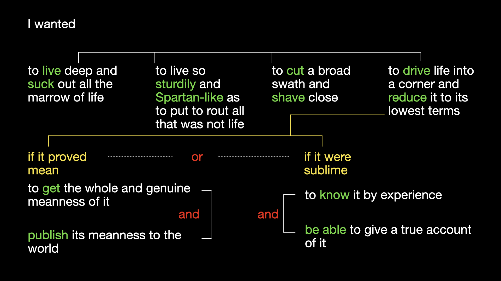

Paul Schacht and Elizabeth Witherell
In any weather, at any hour of the day or night, I have been anxious to improve the nick of time, and notch it on my stick too; to stand on the meeting of two eternities, the past and future, which is precisely the present time.
These words from Walden are often quoted, and much has been written about what it might have meant to Thoreau, or what it should mean to us, his readers, to “improve the nick of time.” Our essay explores different questions, however: what it might mean, if you are Thoreau, to improve what you have to say about improving the nick of time, and what it might mean, if you are Thoreau’s reader, or any writer’s reader, to stand on the meeting point of the words the writer wrote in the past and the words that will remain with that writer’s readers into the future—the point, that is, of revision.
The careful reader will have noticed that the words quoted from Walden above are not quite what we read in any published text of the book. What we do read is that the meeting of two eternities, the past and future, is “precisely the present moment” (W 17, emphasis added).1 If we look at the manuscript leaf from the first of the seven extant draft versions of Walden that Thoreau composed between 1846 (while still at the pond) and 1854 (when the book was published by Ticknor and Fields), we see in Thoreau’s racing cursive the word “time” struck out with a line, and the word “moment” inserted above it and to the right. In examining this point of revision, we may well have the sensation of witnessing, in real time, Thoreau’s recognition that the precise and circumscribed word “moment” is a much better one for a meeting point than the generic word “time” (HM 924, 1:19).
As justly famous as the nick-of-time sentence is this one: “Time is but the stream I go a-fishing in. I drink at it; but while I drink I see the sandy bottom and detect how shallow it is. Its thin current slides away, but eternity remains” (W 98). Although studying one of Thoreau’s manuscript pages may give us the feeling that we are with him in the moment, peering over his shoulder as his pen enacts a re-visioning of his intention in the replacement of one word by another, we are in fact gazing at the sandy bottom, or rather inky residue, long ago left behind by the stream of Thoreau’s intentions. The moment of revision we imagine ourselves inhabiting is a reconstruction after the fact, and one in which we ourselves supply the intention behind the change, as a matter of interpretation. In its physical appearance, the leaf bearing Thoreau’s first inditing of this passage (with additional revisions, the passage appears on two other leaves as well) is a perfect icon of its own siliceousness, its interlineation-laced hand overwritten with high-amplitude waves of ink serving to cancel the passage, the waves themselves overwritten with a large “X” (or was the “X” overwritten by the waves?), the whole accompanied by a conspicuous inkblot that coincidentally resembles nothing so much as a fish (HM 924, 1:86). Since Thoreau retained the passage, his wavy and crossing lines appear to reflect an intention not to cancel it altogether but rather to relocate it (as will be discussed below) within what would become the chapter “Where I Lived, and What I Lived For.”

Or so it seems reasonable to suppose. But how can we know for sure? Perhaps by inscribing these lines he did intend to omit the passage from Walden but later changed his mind. Similarly, although the fish-like appearance of the inkblot is likely coincidental, can we rule out the possibility that while the ink was still wet he smudged and smeared it, idly or playfully, into something approaching piscine proportions?
A manuscript page of Thoreau—of any writer—is, like the earth the writer trod, a physical space bearing witness to a sequence of actions in time. But constructing from manuscript evidence what John Bryant calls a “revision narrative” is of course not at all the same as constructing a scientific narrative of geologic change, in which intentions have no place.2 The fact that intentions are ultimately unknowable, and that most if not all authorial actions are overdetermined, makes it impossible to construct any but the simplest revision narrative with much confidence. In studying the manuscript of Walden, it might well seem safer to remain, as the tradition of documentary manuscript transcription does, on the firm ground of description, rather than step into the whirlpool of interpretation.
Yet arguably the necessarily tenuous and contestable nature of revision narratives is no more problematic than that of the stories we tell about the meaning of published poems, novels, and other texts. Those stories, too, translate space into time. We construct textual meaning in part by asking why we find this word in the text and not some hypothetical other, a question that implies a moment of choice, usually (though not always) authorial choice, conscious or unconscious. Meanwhile, in the case of revision narratives, we have the advantage that we often find ourselves asking why this word and not that particular other word that is before our eyes on the page, written and then canceled.
In what follows, we attempt to construct a partial revision narrative of “Where I Lived, and What I Lived For,” looking in particular at changes Thoreau made in his own effort to think about the relationship between space and time. Before going further, however, let us first orient readers briefly to the complex history of the Walden manuscript.
Thoreau lived at Walden Pond between 1845 and 1847. While there, he delivered several lectures in Concord and elsewhere about his experience, using an initial draft of what would be published in 1854 as Walden.3
After Thoreau’s death in 1862, his manuscripts found their way into various hands. Roughly 600 manuscript leaves constituting the bulk of Thoreau’s work on Walden were eventually obtained by Henry E. Huntington. At the Huntington Library in San Marino, California, they are cataloged as HM 924. (At least fifty additional extant leaves of Walden not in HM 924 reside in other libraries or with private collectors.) In the 1950s, J. Lyndon Shanley, studying the 600 leaves—that is, 1200 pages—of HM 924, hypothesized that Thoreau put the work through seven distinct draft stages.4 The first version, the one Thoreau used as a lecture text, which Shanley labeled “A,” is the only complete one. The others (“B” through “G”) are fragmentary and discontinuous. Shanley reasoned that Thoreau composed Version A between September 1846 and September 1847, B and C between mid-1848 and the summer of 1849, D between early 1852 and September of that year, E between September 1852 and sometime in 1853, F between late 1853 and early 1854, and G between February and March of 1854.5 An eighth draft must have been provided to the printer, but that draft is lost. In place of the printer’s copy, the best reflection we have of Thoreau’s final version is the publisher’s proof, bearing both the printer’s and Thoreau’s corrections, which is also at the Huntington and identified there as HM 925.
In 1967, building on Shanley’s work, Ronald Earl Clapper filed a Ph.D. dissertation at UCLA titled “The Development of Walden: A Genetic Text.” Clapper’s dissertation collates Version A and the six other, fragmentary versions as witnesses, using Houghton Mifflin’s 1906 edition of Walden as base text and registering the variant readings across the seven draft versions in footnotes. In 2014, the present authors, working with Clapper and a team of editors, published an XML-encoded web version of Clapper’s dissertation as Walden: A Fluid-Text Edition. A project of Digital Thoreau, a collaborative initiative headquartered at the State University of New York at Geneseo, the fluid-text edition enables readers to compare the transcribed drafts of Walden side-by-side, in a browser window, with one another and the Princeton University Press edition of Thoreau’s published text. A related Digital Thoreau undertaking, “The Walden Manuscript Project,” provides a search tool for cross-referencing Clapper’s transcription with the manuscript itself, which the Huntington digitized in 2019 with grant funding obtained through the State University of New York. Our essay cites a given image of the manuscript (HM 924) by the volume and page number assigned to it on the website of the Huntington Digital Library.6 It cites proof images (HM 925) by their assigned sheet numbers.
The first leaf containing “Where I Lived” (hereafter WIL) content in Version A (1846– 1847) begins with language that would ultimately find its way into the chapter’s eighth paragraph. The leaf does not contain a chapter title because at this stage Thoreau had not divided his text into chapters. In A, the opening words of WIL 8 are “When I first went to the pond to live . . .”. (We consistently refer to paragraphs by their place in the published Walden. Again, in A these are the first words of the manuscript portion that would ultimately become WIL 8). In Walden as published in 1854, WIL 8 begins, “When first I took up my abode in the woods . . .”. Between his first draft of this paragraph, then, and the published version, Thoreau decides to change how his words locate him in space, from “the pond” to “the woods”; as we shall see, paragraph 8 is not the only place in the chapter where he does this.

Thoreau’s re-ordering of the first three words in the sentences above (“When first I . . .” in publication as opposed to the original “When I first . . .” in A), together with his introduction of the word “abode” to designate the location of his residence in the woods, may reflect the manuscript’s overall trajectory from lecture text to literary work. The inverted word order in particular seems distinctly literary.
Notably absent from A is the published version’s all-important reference to Independence Day 1845 as the location on the calendar—the moment in time, in other words—when Thoreau began living at Walden. What both versions of WIL 8 have in common, however, is that they focus largely on the details of Thoreau’s house itself: the lack of plastering or chimney, the weather-stained boards, the white hewn studs and freshly planed doors.
In addition to WIL 8, the leaves of A contain what would become paragraphs 9, 10, and 13–23 of WIL in the published Walden. It is not until the fifth, or D version (1852), that the first three paragraphs of the published WIL appear, together with the fifth and seventh paragraphs. Paragraph 6 first appears in E (1852–1853), paragraphs 11 and 12 enter in F (1853–1854), and paragraph 4 makes its first appearance in G (1854).
But the picture is a little more complicated still, for two reasons: first, some of the paragraphs in A that remained in the chapter were extensively rewritten in B; and second, paragraphs 18–22, while first written in A, originally followed what would become the second paragraph of the chapter “Sounds”; only later were they relocated to form the sequence we see in the published Walden.
Yet another wrinkle: in A the first part of WIL paragraph 23—the canceled version of the “Time is but the stream I go a-fishing in” passage we have already looked at—appears on the verso of the page containing paragraph 16. This is important because it means that in A, Thoreau’s reflection on time follows immediately on the paragraph containing his most memorable explanation of why he went to Walden: “I went down to the pond,” he writes in A, “because I wished to live deliberately.” (The published Walden, in a shift parallel to one noted above, begins, “I went to the woods”—not “down to the pond” [emphasis added].) In A, WIL paragraph 17 follows this sequence. It famously laments the superficial goals to which Thoreau feels too many of his fellow citizens are directing their lives, and advocates the value of simplicity. (“Simplicity–Simplicity–Simplicity” [HM 924, 1:87].)
To summarize, then: in its original shape, the stretch of A we have been discussing is not yet a chapter titled “Where I Lived, and What I Lived For.” It begins with Thoreau describing where he lived, builds to what would become the published book’s most memorable description of what he lived for, and ends shortly thereafter with a meditation on his relationship to time. In fact, the title Thoreau would eventually choose for this chapter would in a sense flag the connection between time and space as the chapter’s controlling idea. “Where I Lived” obviously invokes space, and “What I Lived For” less obviously, but just as certainly, invokes time. To live for something is to project oneself out into the future: to be oriented and in motion towards an objective. Thoreau’s objective, as just noted, was to live deliberately: “I went down to the pond because I wished to live deliberately.” Place and purpose, location and time.
Like many of the best narratives, our partial revision narrative of WIL contains more than one subplot. The first concerns a revision Thoreau makes to the “live deliberately” sentence within A itself—a revision internal to this version rather than a difference in wording between versions. Following “I went down to the pond because I wished to live deliberately,” Thoreau in A originally wrote “and front only the essential facts of life . . .”. He then, at some point, came back to this place in the sentence, changed the “a” of “and” to “o,” added a “t” to the left of it to make the word “to,” and scraped at the “nd” ending of “and” to cancel it (HM 924, 1:85).

The revision alters the structure of the sentence in a crucial way. Before the change, the sentence seems to present Thoreau’s purpose in going down to the pond as a list, its items joined by the coordinating conjunction “and.” After the change, the sentence describes his purpose by means of two grammatically parallel elements: two infinitive phrases, the second of which—“to front only the essential facts of life,” and everything that goes with it structurally—may be read as an expansion or elaboration of the first: to live deliberately.
The sentence’s revised grammatical structure clarifies that living deliberately was not one of a number of purposes for Thoreau, but the overall, organizing purpose, comprehending others related to it. It also paves the way for the elaborate parallelism of the next sentence but one. Here there are four phrases, each containing two parallel elements, the last containing two parallel sub-elements (“if” clauses joined by “or”), each one of those containing two parallel sub- elements joined by “and.”
There is parallelism as well in the bit of verse Thoreau adds immediately following paragraph 23 in A:
I seek the Present Time,
No other clime,
Life in to-day,
Not to sail another way,
To Paris or to Rome,
Or farther still from home.
That man, whoe’er he is,
Lives but a moral death,
Whose life is not coeval With his breath. . . .
And so on, for a good many more lines. Here it is time and space that run parallel. Thoreau seeks “the Present Time, / No other clime,” preferring “Life in to-day,” at “home,” to life in “Paris” or “Rome” (emphasis added).
Although he does not retain these lines in later drafts or the published Walden of 1854, he does retain their informing thought and structure. Indeed, his continued working out of the time- space parallel, as both idea and structural principle, explains much of his subsequent revision to WIL.
As we follow the evolution of WIL across multiple drafts, we see that it comes to assume a rough bipartite structure in which the first dozen paragraphs mainly emphasize where he lived, and the last ten mainly emphasize what he lived for, with correspondingly somewhat more emphasis on space in the first half, and somewhat more emphasis on time in the second. As the chapter takes on this shape, paragraph 13 becomes the pivot point between its two halves. One important bit of evidence that Thoreau himself sees a shift in emphasis after paragraph 13 is his note to the printer on the page proof for this chapter. As printed, the running heads for the three pages on this sheet (95–97) alternate between “Where I Lived.” and “Walden.” But Thoreau marks the running head for the page that contains paragraph 14 to be revised from “Where I Lived.” to “What I Lived For.” and adds a note instructing the printer to continue the new running head “to the end of the chapter” (HM 925, 32).

Let us look at how Thoreau builds out the chapter on either side of paragraph 13. Then we can examine how paragraph 13 functions as a pivot.
Earlier, we noted that the first words of WIL in A end up in paragraph 8 of the published Walden. It is in D that Thoreau adds to the manuscript the words that would ultimately become the chapter’s first paragraph. These words are all about the relationship of time and space in a person’s life: “At a certain season of our life,” he first writes in D, “we are accustomed to consider every spot as the possible site of a house” (HM 924, 4:65). The sentence picks out a particular time of life, a definite period, a “season.” There comes a time in one’s life, he is saying, when one sees the world in a particular way. And what one sees, interestingly, are “spots” and “sites”—spaces that, like this period of one’s life, are definite or bounded, even if their boundaries are not precisely drawn.
The new opening paragraph represents a revision to Thoreau’s plan for where and how to begin this part of his account. Instead of beginning by describing where he went to live and why he went to live there, Thoreau decides to put those details in a larger context, to place his own experience on a timeline common to human lives in general, or at least to the lives of his imagined readers. The “I” in A (“When I first went to the pond to live”) becomes a “we” in D (“we are accustomed to consider”). This is another revision that seems consistent with the development of Walden from lecture to book. Thoreau framed his lecture expressly as an answer to his neighbors’ questions about what he was doing in the woods. Even in the lecture, of course, he used his personal experience to draw larger conclusions with broad application to his fellow273 citizens of Concord and his fellow human beings, but the book uses that broader view as a frame more consistently, explicitly, and deliberately than the lecture.
The wider framing in D went through some revision itself before arriving at the wording we see in the published Walden. At first, Thoreau wrote, “At some seasons of our life we are accustomed to consider every spot . . .”; then he substituted “a certain” for “some” and made “seasons” singular. Before the change, the plural “seasons” seems to suggest that there might be multiple times in one’s life, and not one particular time, when every spot might look like a possible site of a house. It is only after the change that we get that narrowing to a definite and particular phase of life, and the nice alignment of singularities in the sound and rhythm of the sentence: “At a certain season of our life we are accustomed to consider every spot as the possible site of a house” (emphasis added).
But there is still more to see here. Although one can barely make them out on the manuscript surface, there are two penciled words, one above and one below “accustomed.” Above, Thoreau penciled “disposed,” and below, he penciled “inclined.” Neither word is explicitly canceled, but this is not the only place in the manuscript where Thoreau appears to use the space between the lines to brainstorm alternative wordings, as we shall shortly see. This brainstorming feels like a different process from writing words and then canceling them. It is not as if Thoreau wrote “disposed,” changed his mind to “inclined,” and finally settled on “accustomed.” It seems most likely that he wrote “accustomed,” questioned whether he should keep it, penciled in a couple of other words as possibilities, then decided to hold fast with “accustomed.”
Why stick with “accustomed,” especially since “inclined” and “disposed” both suggest a bit more agency, more of that sense of forward projection we spoke of earlier in connection with274 the phrase “What I Lived For”? By comparison, “accustomed” seems more passive, expressing habit more than intention. Yet it is also more consistent with the idea that looking out for possible home sites is usual—that is, customary—at the time of life he is describing, something we do without even really thinking about it. This consistency may explain Thoreau’s decision. The new first paragraph for WIL introduced in D goes on to explain that no matter what site Thoreau imagined himself occupying, “Wherever I sat, there I might live; and the landscape radiated from me accordingly.” Thoreau then asks, “What is a house but a sedes–a seat?,–better if a country-seat” (HM 924, 4:66). The next eleven paragraphs of the chapter as published in 1854 mainly focus on one or another aspect of Thoreau’s physical situation at the pond (W 82– 87). Below, key words and phrases from these paragraphs are italicized to illustrate this emphasis on the physical:
[Block quote]2:. . .I even had the refusal of several farms . . . 3: I have frequently seen a poet withdraw, having enjoyed the most valuable part of a farm . . . 4: The real attractions of the Hollowell farm . . . 5: It makes but little difference whether you are committed to a farm or the county jail. 6: “When you think of getting a farm, turn it thus in your mind . . .” 8: When first I took up my abode in the woods . . . 9: The only house I had been the owner of before . . . 10: I was seated by the shore of a small pond . . . 11: This small lake was of most value as a neighbor . . . 12: Though the view from my door was still more contracted . . .
In this series of paragraphs, number 10 deserves just a moment’s additional attention because of what happens to it between A, when it first appears in the manuscript, and Thoreau’s re-writing of it in F. This is another subplot in the larger narrative of the chapter’s revision history. That sentence about being seated by the shore is absent in A. In A, the paragraph begins with words that would be incorporated into the second sentence of paragraph 10 in the published Walden: “When I looked out on the face of the pond, it reminded me of a tarn. . .” (HM 924, 1:79). It is in F that we encounter the first iteration of what would become the initial sentence of the paragraph, which now begins, “I was seated by the shore of a beautiful pond, somewhat higher than the village of Concord, in the midst of an extensive wood between that town and Lincoln. . .” (HM 924, 6:13–14). What had changed between A and F that might have been a factor in Thoreau’s decision to add this new first sentence? As we have seen, between A and F, in D, Thoreau had introduced that pun on a home as a seat. Now, in F, he seems to be building on the pun. Thoreau is not merely sitting by the shore of a beautiful pond but seated there: established, rooted in the location that it is fit for him to occupy at this season of his life. And from this seat, as he looks out on the face of the pond, the landscape does indeed radiate from him.
Let us skip paragraph 13 (the pivot point) for now and move ahead to paragraph 14. Paragraph 14 is all about time: about morning and awakening. In it, time is joined to purpose: to what Thoreau is living for. “To be awake,” he writes near the bottom of the paragraph, “is to be alive” (W 90). And as he will explain in paragraph 16, he came to the pond and the woods because “I did not wish to live what was not life.”
From paragraph 14 onward, the emphasis of the entire chapter shifts from where Thoreau lived to what he lived for, to his own sense of purpose in life, often in contrast to how he sees276 others living (W 90–98). With this shift in emphasis comes, in many paragraphs, a concomitant shift in emphasis from space to time:
[Block quote] 15: We must learn to reawaken and keep ourselves awake, not by mechanical aids, but by an infinite expectation of the dawn. . . 16: I went to the woods because I wished to live deliberately. . .and not, when I came to die, discover that I had not lived. 17: The nation itself, with all its so called internal improvements. . .is just such an unwieldy and overgrown establishment.. . .It lives too fast. 18: Why should we live with such hurry and waste of life? 19: There was such a rush, as I hear, the other day at one of the offices to learn the foreign news by the last arrival. . . 20: The preacher, instead of vexing the ears of drowsy farmers on their day of rest at the end of the week. . .should shout with thundering voice,–“Pause! Avast! Why so seeming fast, but deadly slow?“ 21: When we are unhurried and wise, we perceive that only great and worthy things have any permanent and absolute existence. . . 22: Let us spend one day as deliberately as Nature. . . 23: Time is but the stream I go a-fishing in.
This shift in emphasis is exactly that—it is not as though space drops out of the picture in the second half of the chapter. It would be odd if it did, if for no other reason than that it is difficult to talk about time without treating it metaphorically as space, as in the example of time as a stream, or the present moment as a point on a line, with eternity stretching out on either side of it. In fact, as the chapter’s emphasis shifts from space to time in paragraph 14, we are offered a277 pointed contrast to linear metaphors of time. In the background of all the talk in 14 about morning, awakening, and renewal is the metaphor of time as a circle.
Paragraph 14 helps set the stage for the concluding words of Walden, not written until the final or G draft of the manuscript, with its assertion that there is “more day to dawn” (W 333). But 14 goes through extensive revisions in the B and F versions, and it is worth touching momentarily on one of these: the introduction in B, and revision in F, of Thoreau’s sentence about the bathing tub of King Tching-thang: “They say that characters were engraven on the bathing tub of king Tching-thang to this effect: ‘Renew thyself completely each day; do it again, and again, and forever again’” (W 88).
Thoreau inserts the sentence about the bathing tub of King Tching-thang between the third and fourth sentences of the paragraph, right after the description of his own ritual of bathing daily in the pond, a sentence that links time (he bathes “daily”) and space (in the “pond”). In B, Thoreau adds the sentence vertically in the left margin of a leaf, in pencil, and the wording is not yet “again, and again, and forever again” but rather “anew, and anew, and forever anew” (HM 924, 2:91). In addition, he begins the sentence in B with the words “I have since read that,” before canceling those words with a line. There is evidence that Thoreau had indeed recently read this anecdote about King Tching-thang at the time of the B draft of Walden; that is, 1849. A manuscript leaf not in HM 924 but from a commonplace book that Thoreau kept between 1841 and 1851, now in the Berg Collection at the New York Public Library, contains, at the top, his transcription and—as it turns out—translation of words about the bathing tub of Tching-thang. There the words are “do it anew, again anew, and always anew,” and it is possible to see that he has penciled the word “regenerate” just above “do it anew” (Commonplace book 1841–1851, 129). Thoreau identifies as his source for the quotation an 1841 French translation by Guillaume278 Pauthier of the “Four Books,” a collection of Confucian classics (Commonplace book 1841– 1851, 127).7 His “anew, again anew, and always anew” in the commonplace book is a faithful translation of Pauthier’s “de nouveau, encore de nouveau, et toujours de nouveau” (Pauthier 1841, 12). In F as in B, however, he adjusts his translation to make it more concise and arguably a little closer to idiomatic English: “anew, and anew, and forever anew” (HM 924, 6:20). Close examination of the first “anew” in F reveals that Thoreau appears to start to write a “g” following the “a” rather than an “n,” suggesting that “again”—the word he ultimately chooses, and which sounds still more idiomatic than “anew”—is already under consideration in his mind.
[Figure 13.6 here.]
On the page proof this passage reads, “again, and again, and forever again” (HM 925, 32); presumably it also read that way in the final, fair copy of the manuscript provided to the printer, which, as mentioned earlier, has been lost.
To review, then: the original core, in A, of what would eventually become a chapter titled “Where I Lived, and What I Lived For,” consisted of nine paragraphs, some of which would be expanded, or in other ways substantially revised, in subsequent drafts. Originally in A, paragraph 23, the “Time is but the stream” paragraph, followed immediately on 16, which began, “I went down to the pond because I wished to live deliberately.” But then, as we have seen, Thoreau canceled 23, added 17, and recopied 23. Even in this initial phase, we have a few paragraphs—8, 9, and 10—emphasizing Thoreau’s location, and another handful of paragraphs—14–17, plus 23—that seem to give more emphasis to Thoreau’s purpose in going to the pond. But then, across versions D through G, Thoreau builds out on either side of paragraph 13, retaining the placement of 23 as the final paragraph but pushing it away from 17 by bringing in 18–22 from the portion of the manuscript that would become the chapter “Sounds,” where they were part of a general reflection on time and purpose. In the end, we have a dozen paragraphs very much focused on where Thoreau lived, with lots of language about place and space, and ten paragraphs very much focused on what Thoreau lived for, with lots of language about time. We have said that the chapter pivots on paragraph 13. Let us go there now.
In the published Walden, paragraph 13 begins, “Both place and time were changed” (W 87). In A, the language is even more emphatic: “Both place and time had undergone a revolution” (HM 925, 1:80). Thoreau continues in A, “and I dwelt nearer to those eras in history which had attracted me, and as I had no clock nor watch, but the sun & moon, I also lived in primitive time.”
Thus the paragraph that pivots us from place to time, from where Thoreau lived to what he lived for, begins by putting place and time together. A revolution of place and time makes Thoreau feel, at first, as though he dwelt in those eras in history that attracted him. But something is missing. History is time. What about place? Thoreau adds the phrase “to those parts of the globe &” ahead of “to those eras in history,” keeping place and time in the same order as farther up in the sentence. The revised sentence reads, “Both place and time had undergone a revolution and I seemed to dwell nearer to those parts of the globe & to those eras in history280 which had attracted me, and as I had no clock nor watch, but the sun & moon, I also lived in a more primitive and absolute time” (emphasis added).
With neither clock nor watch, with only sun and moon to orient himself chronologically, it is as if Thoreau has been transported to a primitive time. Well, not exactly primitive: on the manuscript page, we can see that Thoreau has inserted both “a more” and “and absolute” as qualifiers, yielding “a more primitive and absolute time.” “Absolute” is an interesting addition. It suggests that the revolution Thoreau is describing took him not simply back in time but onto some other temporal plane altogether, to a time that is no time and every time, a time outside of time.
Like Thoreau’s sentences about living deliberately in paragraph 16, the first sentence of paragraph 13, in A, develops into a complex structure of parallelisms: a main clause connected by a coordinating conjunction to two further clauses, that, with their own internally coordinated rhythms (including a subordinate clause shown here off to the right) elaborate on the revolution in Thoreau’s experience.
[Figure 13.7 here.]
However, after all this tinkering in A, Thoreau scraps much of it in the published Walden. No more “revolution”: place and time are simply “changed.” No more sun, moon, clock, or watch; no more primitive and absolute time here or in “Sounds.” Instead, we read, “Both place and time were changed, and I dwelt nearer to those parts of the universe and to those eras in history which had most attracted me” (W 87). Some interesting things get lost in the process, including the wonderful double meaning of the word “revolution,” which can denote both a281 turning and a rupture. But perhaps the sentence as revised for the published version is stronger for being more compact and direct, its balanced structure more readily discerned. The next sentence in A does not appear in Walden as published; after it, in A, a new paragraph goes on as follows:
[Block quote] Where I lived was as far off as many a region viewed nightly by astronomers. We are apt to imagine rare and delectable places afar off whither astronomers look, in some remote and more celestial corner of the system, behind the constellation of Cassiopeia’s Chair, far from noise & disturbance. I imagined that my house actually had its site in such a withdrawn, but forever new and unprophaned part of the universe. If it were worth the while to settle in those parts of the system near to the Pleiades or the Hyades, or Orion or Aldebaran, then I was really there, or at an equal remoteness from the life which I had left behind–as near to the immortal city–dwindled & twinkling with as fine a ray to my nearest neighbor and only to be seen in moonless nights by him. (HM 924, 1:80–81)
In view of all the talk here about constellations, systems, and stars, it is not hard to see why Thoreau would ultimately alter his reference to “parts of the globe” in the first sentence of the final version of the paragraph, so that it becomes, in the published Walden, “parts of the universe” (W 88).
The manuscript of A shows Thoreau giving a great deal of thought to the celestial references in this paragraph. Having begun by writing “to the Pleiades or the Hyades, or Orion or Aldebaran” he once again uses the space between the lines to brainstorm. Though impossible to reconstruct with any certainty, his sequence of revisions appears to be something like the following: he revises “Hyades, or” to “Hyades, to” by canceling “or” and interlining “to” in pencil; changes “Orion or Aldebaran” to “to Lyra or Orion or Aldebaran” by inserting “to Lyra or” in pencil; flirts, in pencil, with substituting “or Lyra or Andromeda” without canceling “Orion or Aldebaran”; pencils a series of other options—“Capella,” “Procyon,” “Sirius,” “Altair,” “Arcturus”—as candidates to pair either with “Orion” or “Aldebaran”; cancels the whole list, along with “Lyra or Orion” and “Lyra or Andromeda,” using a single, wavy, penciled line; pencils “or Arcturus” after Aldebaran above the line, using a caret to position it before the comma, and “or Altair” below the line after the comma. By the time he re-copies this passage in F, if not before, he has resolved the final choice between “Arcturus” and “Altair” in favor of the latter, and he retains the choice in the published Walden: “to the Pleiades or the Hyades, to Aldebaran or Altair” (HM 924, 6:1025–19; W 88).
[Figure 13.8 here.]
It is no more possible to reconstruct Thoreau’s thinking as he worked through these options than it is to reconstruct the order in which he marked the page, but it seems plausible to suppose that he is interested, above all, in the poetry of his choices. “Cassiopeia’s Chair” is a near alliteration. The “Pleiades or the Hyades” is not alliterative, but both words have three syllables and, depending on how one pronounces the first (Plee-a-deez, Ply-a-deez, or Play-a- deez—all three pronunciations are in the dictionary) they are either rhyming or assonant. Thoreau’s original choice, in ink, of “Orion or Aldebaran” provided two subsequent words with similar vowel sounds and similar-sounding word-endings. But “to Orion or Aldebaran” sounds a bit flat-footed, and it is just another pair of assonant words containing three or more syllables. “To Aldebaran or Arcturus” is nicely alliterative, but it, too, pairs words of three or more283 syllables. “To Aldebaran or Altair,” in addition to being alliterative, has the advantage that both words begin with the same syllable: “Al.” The two-syllable “Altair” introduces some rhythmic variation, and it also enables Thoreau to end the sentence with a stressed syllable, which makes for a more emphatic conclusion.
Finally, we might notice that the stresses in the “Aldebaran”/“Altair” pairing are nearly the inverse of those in the “Pleiades”/“Hyades” pairing: stress on the initial syllable in “Pleiades”/“Hyades,” stress on the following syllable in “Aldebaran”/“Altair,” making the two word-pairs lovely complements.
Should we imagine that Thoreau, pen or pencil in hand, deliberated internally about his choices in just the way we have described? Of course not. But is it reasonable to suppose that, in composing, he constantly weighed syllable and stress, with an eye, in particular, towards parallelism and balance? That conjecture seems to us supported by the myriad revisions throughout the Walden manuscript that show Thoreau adjusting word choices and sentence structures in just such a fashion. We have already looked at two similarly motivated revisions in WIL: the sentence about living deliberately in paragraph 16 and the one about time and place in paragraph 23.
Meanwhile, we should note another inversion that takes place in this paragraph. After a dozen paragraphs about where Thoreau lived that represent space largely through his own perspective—from his life-stage-appropriate perception of every spot as a potential site for a house, to the view from his door, to the horizon that radiates from him at his seat on the pond’s shore—paragraph 13 suddenly and dramatically, at its conclusion, pivots to represent Thoreau as he presumably appears to his nearest neighbor: “dwindled & twinkling with as fine a ray to my nearest neighbor and only to be seen in moonless nights by him” (HM 924, 1:81).
The effect of this inversion or pivot or—to use the word Thoreau eventually rejected, “revolution”—is perhaps best described as analogous to the effect of the so-called iris transition in film, where the visible screen content becomes a gradually shrinking circle and finally disappears in blackness, ending one scene, and a gradually widening circle introduces the next scene. In A, at least, the scene begun in paragraph 1 closes in night and darkness at the end of paragraph 13, with Thoreau a distant, twinkling star. As a new scene opens in paragraph 14, it is morning, and we are with Thoreau in his remote corner of the universe, once again seeing the world through his eyes: “Every morning was a cheerful invitation to make my life of equal simplicity and purity with nature herself” (HM 924, 1:81).
Of course, Thoreau’s remote corner of the universe is in actuality only a mile from any neighbor, and this is the whole point of the paragraph. It is interesting to see how Thoreau sharpened the point through revision. “We are apt to imagine rare and delectable places afar off,” in A, becomes, in F, and remains in the published version, “we are wont to imagine” (emphasis added)—possibly because “wont” conveys a greater sense of passive habit (HM 924, 1:80, 6:18; W 88). Certainly its origin in Middle English wunian—“to dwell, inhabit, exist; be accustomed, be used to”—is a better fit with the theme of dwelling that lies at the heart of the passage, the chapter’s focus on “Where I Lived,” and the book as a whole.
At the same time, “I imagined that my house actually had its site in such a withdrawn, but forever new and unprophaned part of the universe,” in A, becomes, in F, and remains in the published Walden, “I discovered that my house actually had its site. . .” (HM 924, 1:81, 6:18; W 88; emphasis added). Surely “discovered” is a better fit than “imagined” with the word “actually,” a word whose significance to Thoreau in this sentence is made plain by his decision, in A, to relocate it from after “site” to after “house,” where it gains in emphasis. The change to “I discovered” sets up a direct contrast with “we are wont to imagine”: we imagine that we have to travel to a distant corner of the universe to achieve solitude and space for meditation, but Thoreau discovered that in actuality he could achieve the requisite remoteness by moving a short distance away. What we mistakenly imagine to require a radical change in our physical circumstances, we can actually achieve through a small geographic change and a radical shift in perspective. The results can be revolutionary.
The contrast between imaginary wants and real needs is central to everything that follows paragraph 13 in WIL and is of course central to Walden. Where he lived, what Thoreau lived for was to discover that which is truly real. “Be it life or death we crave only reality,” as he writes in the “Sounds” stretch of A that subsequently moved (presumably in B or C) to what became paragraph 22 of WIL (HM 924, 1:123). Unfortunately, too many people are looking for reality in all the wrong places: “I perceive that we inhabitants of Concord live this mean life, that we do,” he writes in A, originally in that same “Sounds” stretch of the manuscript, “because our vision does not penetrate the surface of things–we think that that is which appears to be” (HM 924, 1:118).
“In eternity there is indeed something true and sublime,” he writes near the bottom of the same page. “But all these times & places & occasions are now.” And then, at some point, in pencil, he adds: “& here.”
[Figure 13.9 here.]
Once again, having begun by specifying a time, he emends to specify a place as well. “Now and here”: time and place, purpose and location. Although we have seen that place gets more emphasis in the first half of WIL, while time and purpose get more emphasis in the second half, they are always, for Thoreau, inextricably linked. And in this sentence there is even a linking word: “occasions,” that is, location-specific events in time. His use of the word here chimes with one that he retains in “Sounds,” paragraph 2, the paragraph immediately preceding those he relocates to “Where I Lived”: “A man must find his occasions in himself” (HM 924, 1:116; W 112).
“God himself culminates in the present moment,” Thoreau goes on to say in “Where I Lived,” version A, “and will never be more divine in the lapse of all the ages” (HM 924, 1:118, 122). The “present moment.” That is the time and the space—the nick-shaped space in time— that Thoreau occupies, or at least seeks to occupy, at Walden. The present moment is both where he lives and what he lives for.
We have made a nice circle, one full revolution, one might say, and end where we began. As noted earlier, a large part of the attraction in studying Thoreau’s revisions to Walden is the excitement of feeling that we are with Thoreau in the moment as he seeks the words that will best memorialize his quest for infinite renewal in a finite and densely material here and now. We have noted that that feeling is an illusion, but it is important to recognize that it is no more an illusion than the feeling, when we read Thoreau’s printed words, that he is here, now, speaking to us in the nick of time. It is no more an illusion than the sense that reading his printed words somehow makes his thought present to us as a continuous stream.
As readers, whether of printed texts or manuscripts, these illusions are, in some sense, where we live and what we live for. Meanwhile, the effort to understand a writer’s revisions has this advantage, at least, over the effort to understand a text merely through its published words: it awakens us, again and again and forever again, to the reality that every publication belies the fluidity of thought that gave it life.
Bryant, John L. The Fluid Text: A Theory of Revision and Editing for Book and Screen. Ann Arbor: University of Michigan Press, 2002.
Clapper, Ronald E. “The Development of Walden: A Genetic Text.” PhD diss., University of California, Los Angeles, 1967.
Dean, Bradley P. and Ronald Wesley Hoag, “Thoreau’s Lectures before Walden: An Annotated Calendar.” Studies in the American Renaissance (1995): 148–208 passim.
Pauthier, Jean-Pierre-Guillaume. Confucius et Mencius: les quatre livres de philosophie morale et politique de la Chine. Paris: Charpentier, 1841.
Sattelmeyer, Robert. “Thoreau’s Projected Work on the English Poets.” Studies in the American Renaissance (1980): 239–257.
Shanley, J. Lyndon. The Making of “Walden,” with the Text of the First Version. University of Chicago Press, 1957.288
Thoreau, Henry David. “[Commonplace Book]. Signed, undated,” 1841–1851. The New York Public Library Digital Collections. https://digitalcollections.nypl.org/items/b80117a0- 7e3a-0132-11ef-58d385a7bbd0.
This essay makes parenthetical reference to three different instantiations of Thoreau’s Walden: the Princeton University Press edition, edited by J. Lyndon Shanley (1971), cited parenthetically as W; the digitized collection of Walden manuscript leaves at the Huntington Library, cited parenthetically as HM 924; and the digitized proof sheets of Walden at the Huntington, cited parenthetically as HM 925.↩︎
Bryant, Fluid Text, 144.↩︎
See Bradley P. Dean and Ronald Wesley Hoag, “Thoreau’s Lectures before Walden,” 148– 208 passim.↩︎
Shanley, Making of Walden, 4.↩︎
Shanley, Making of Walden, 18–33.↩︎
The landing page on the Huntington website identifies each draft both by letter and by the number of the physical volume containing that draft. (For example, draft A is in Volume 1.) Each volume is individually paginated beginning with the first manuscript page in the volume. Pages can be accessed via thumbnails in the sidebar.↩︎
It is not known for sure where or when Thoreau encountered Pauthier’s book. However, evidence from Harvard Library’s charging records and from quotations of material in Thoreau’s Journal provides reliable dates for his use of some of the other sources excerpted in the commonplace book and supports the assumption that he read Pauthier in 1849. The first eighty-nine pages of the commonplace book contain transcriptions of poetry probably made in November and December 1841, when Thoreau spent several weeks in the Harvard Library making selections for an anthology of English poetry (Sattelmeyer 1980, 241–242, 245). Pages 91–122 contain passages from The Genuine Remains of Ossian (now attributed to James MacPherson); some of these are quoted in November 1843 entries in Thoreau’s Journal (Journal 1981, 483–493). Page 123 lists works containing Gaelic poetry, and pages 124–126 are blank. The Pauthier translations, on pp. 127–149, are followed by passages from a work identified by Thoreau as “Harivansa ou Histoire de la Famille de Hari, ouvrage formant un appendice du Mahabharata, et traduit sur l’original Sanscrit par M. A. Langlois. Oriental Trans. Fund. 2 vols large 4to Paris & London. 1834.” According to the Harvard Library charging records, Thoreau charged out both volumes of the Harivansa on September 11, 1849.↩︎